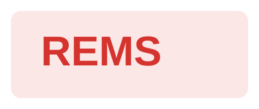
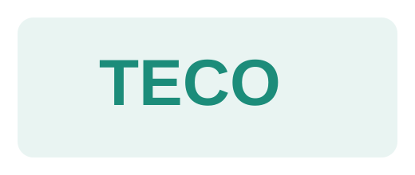
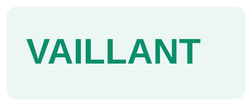

AttrezzatureREMS
REMS è il marchio giusto per dare alla pagina una base forte sul fronte attrezzature professionali, strumenti affidabili e continuità operativa.
Professionisti
Questa sezione parla direttamente a installatori, artigiani, tecnici e professionisti che cercano un punto di riferimento concreto: disponibilità, rapidità, marchi affidabili e un interlocutore che conosce il lavoro e non fa perdere tempo.
Nel nuovo sito la parte professionisti non resta più un contenuto secondario. Deve essere letta come una sezione dedicata, con tono più diretto, più tecnico e più orientato alla continuità del lavoro. Chi entra qui deve capire subito che Termoidraulica Lauri è un supporto reale per forniture, componenti, attrezzature e gestione rapida delle richieste quotidiane.
Questa pagina serve a rafforzare la relazione con chi lavora nel settore: non solo come cliente, ma come interlocutore abituale che ha bisogno di trovare velocemente soluzioni, materiali e persone competenti.
Marchi utili al professionista
Per questa pagina i marchi devono essere un aggancio immediato: il professionista riconosce il brand, percepisce subito il livello della fornitura e capisce che il sito è stato costruito anche pensando al suo lavoro.

AttrezzatureREMS è il marchio giusto per dare alla pagina una base forte sul fronte attrezzature professionali, strumenti affidabili e continuità operativa.
Valsir rafforza la percezione di una proposta seria per impiantistica, scarichi, adduzione e componenti che il professionista riconosce subito come utili e affidabili.

Componenti tecniciTeco completa bene la fascia tecnica con una presenza più mirata su raccordi e componentistica, rendendo la pagina più credibile agli occhi di chi lavora sul campo.

RiscaldamentoVaillant aiuta a rafforzare la parte sistemi e riscaldamento, parlando al professionista con un marchio riconosciuto e forte anche sul piano della fiducia commerciale.
Obiettivi della pagina
Intercettare esigenze locali legate a materiale tecnico, impiantistica, componenti e attrezzature per il lavoro quotidiano.
Far capire in pochi secondi che Termoidraulica Lauri è un partner concreto, rapido e affidabile anche per il professionista.
Creare un canale più diretto per richieste tecniche, collaborazioni e rapporti continuativi con installatori e artigiani.